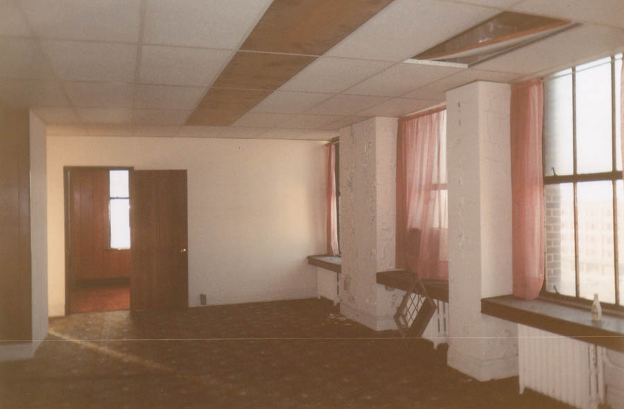
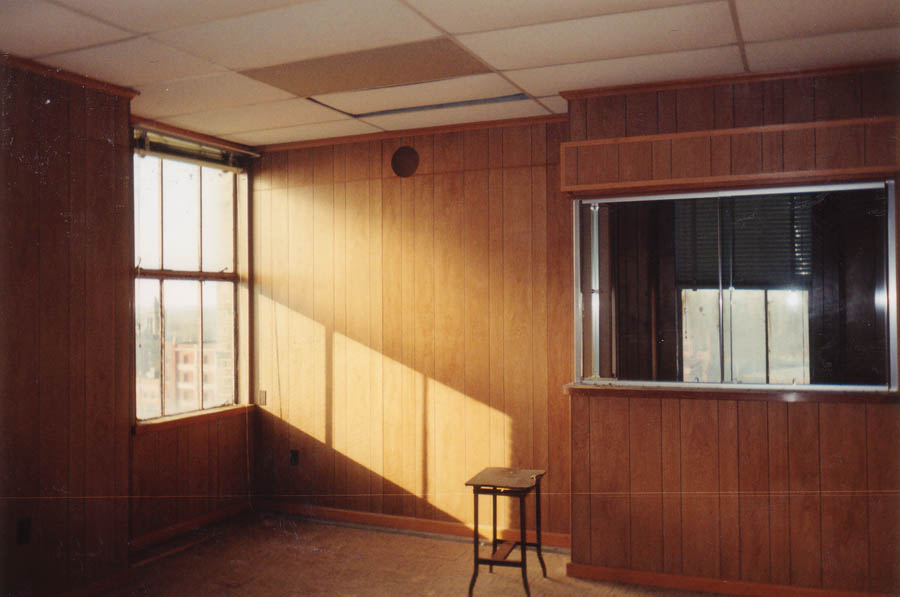
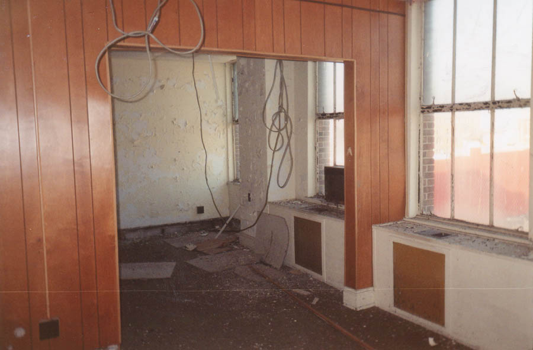
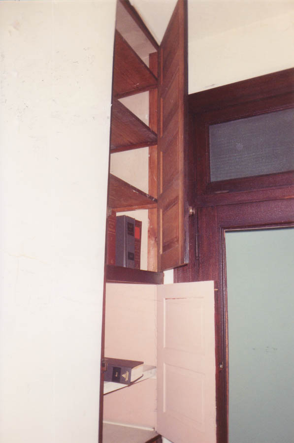
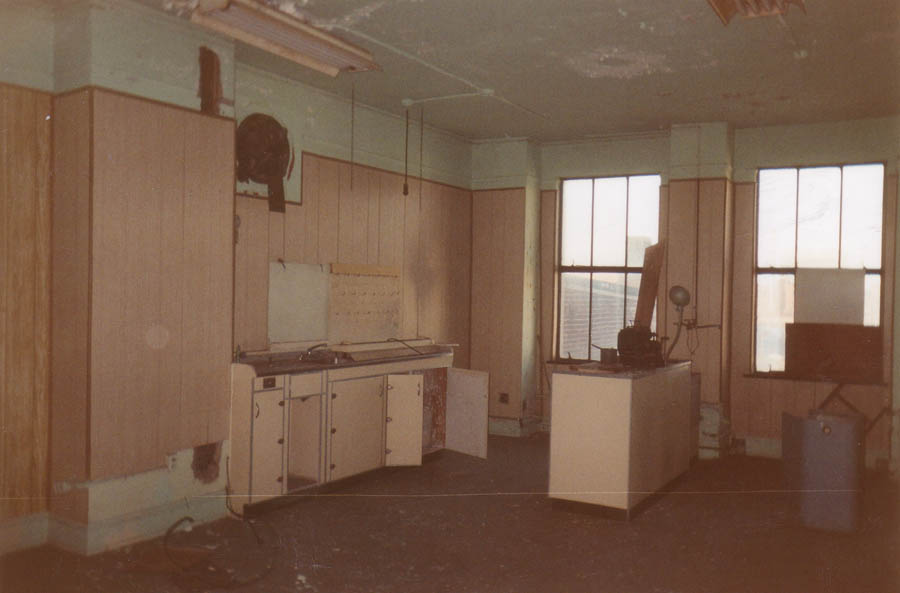
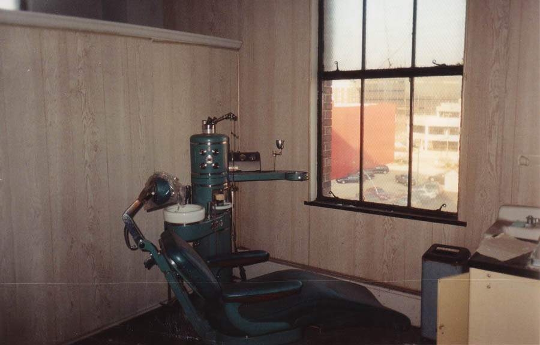
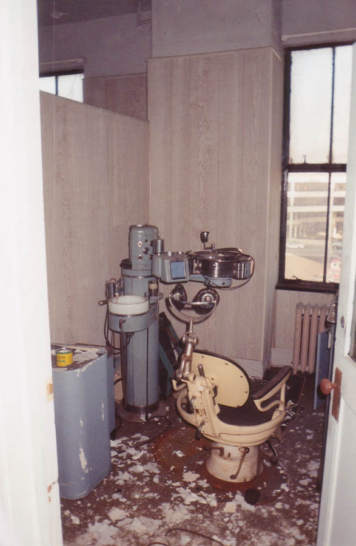
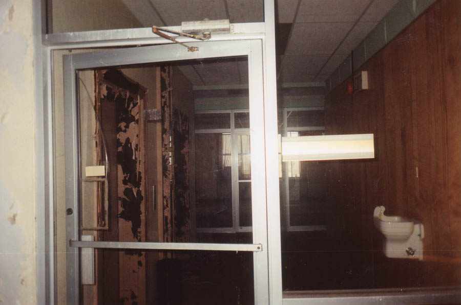
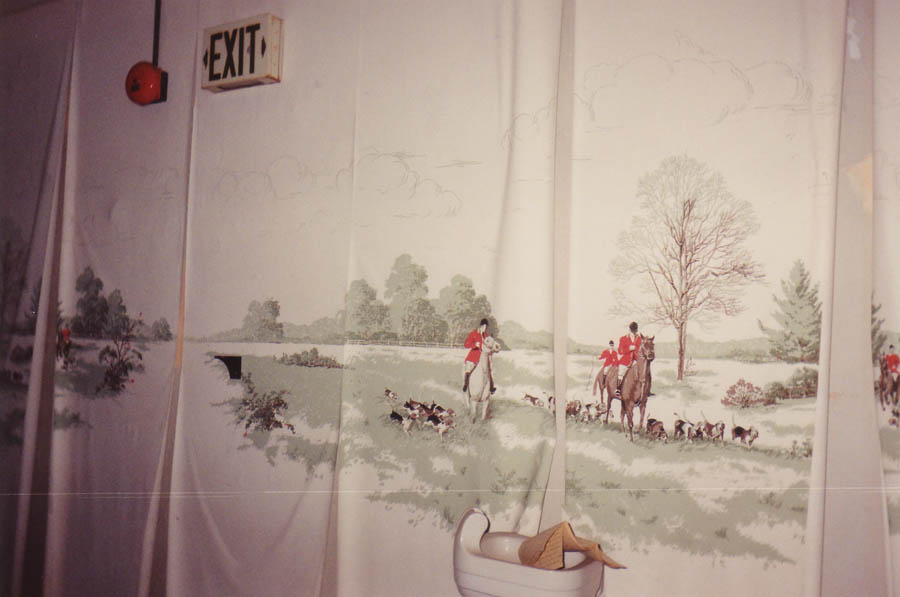

Inside The Tecumseh Building

Every floor of the Tecumseh contains the remains of old offices and small businesses which rented space here. It's full of broken frosted-glass doors with numbers and company names on them.

It's also full of trapped birds (one of which pecked my foot) and animal shit. Near the top there are several broken windows which allow them in. In one room we heard something with four legs running around in the ducts overhead.


Different kinds of businesses had space at the Tecumseh, including accountants, real estate agents, doctors, and a couple of lawyers. In one of the lawyers' closets we found a cupboard with old law books inside, as well as piles of Clark County legal handbooks from about 1986. That's my best guess for when the building was last used.

The one type of business which was present in the Tecumesh more than any other was dentistry. We counted at least four dentists' offices, most complete with waiting rooms and supply rooms.

But the coolest thing in the whole building was the office on the third floor, where there were still two dental examination rooms, complete with chairs. As you can see, they still had the drill apparatus attached, and one even had a drill dangling above the headrest. Creepy stuff.


Each floor is laid out similarly, varying only by type of business and level of cleanliness. A couple of the upper floors have double sets of glass doors in the center, creating an entryway which was probably much nicer before the walls had been kicked through.

Although kids have been through this place, their damage seems to have been minor--especially considering how long it's apparently been unused. There was some graffiti and some broken glass, but a lot of things were still undisturbed--like the dental exam rooms, which had syrettes of lydocain still on the table, and this fancy wallpaper, which was peeling but hadn't been ripped off.

We wrapped up our tour of the Tecumseh on the roof. To see pictures from the highest point in Springfield, click below.
Click Here to Visit the Roof
Back